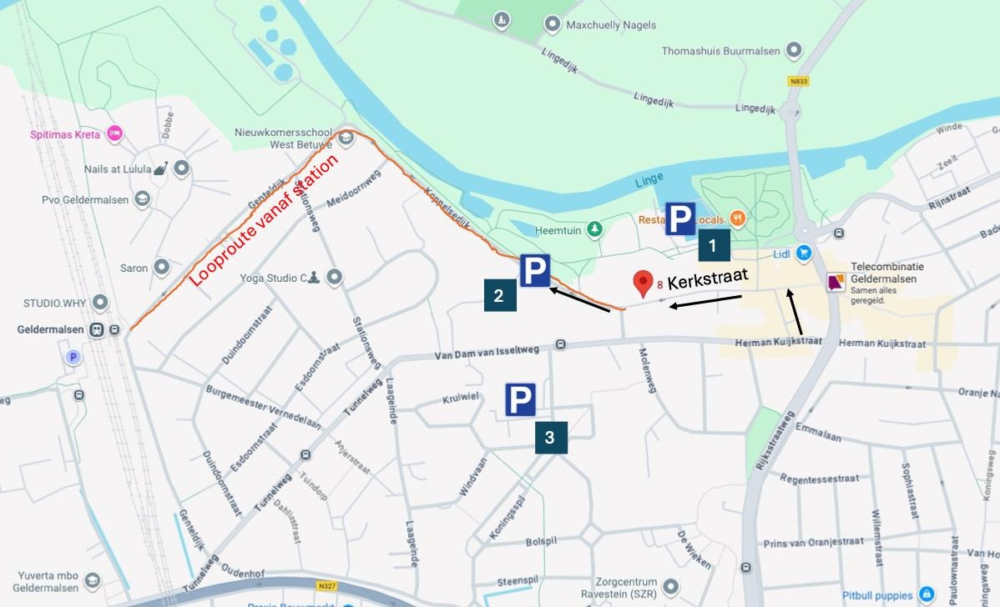

Maartje en David zijn jarig!
MURDER MYSTERY
2 mei 2026 15:00 | Kerkstraat 8, Geldermalsen
Maartje en David zijn jarig!
2 mei 2026 15:00 | Kerkstraat 8, Geldermalsen
Geldermalsen, huis op de dijk.
Egidius van Aerden, patriarch van de familie, wordt dood in zijn bed gevonden.
Een natuurlijke dood, stelt de politie vast, maar zijn zus Cora is daar niet van overtuigd.
Na onthullende woorden op Egidius' begrafenis, wordt ze onderaan de trap gevonden...
Eén van ons is niet te vertrouwen.
Eén van ons weet meer dan hij vertelt.
En één van ons…
heeft een vreselijke daad op zijn geweten.
Als gasten probeer je diegene te ontmaskeren: wie pleegde de moord? Maar de moordenaar, die zet alles op alles om in de duisternis te blijven.
Je bent welkom vanaf 15:00. Zorg dat je er om 16:00 bent, zodat we kunnen beginnen!
Je kunt ook blijven slapen. Laat het dan van te voren even weten, zodat we genoeg bedden hebben.

Het adres is Kerkstraat 8 in Geldermalsen.
Met het OV kan je naar station Geldermalsen. Vanaf daar is het nog ca. 12 minuten lopen.
Parkeeropties als je met de auto komt (zie kaartje):
• P1: Achter ’t Veer. Veel plekken, betaald €0,60/u, ca. 3 min lopen.
• P2: Koppelsedijk (ná het deel vergunningparkeren): gratis, maar je staat in de berm.
• P3: bij het Gemeentehuis. Gratis, ca. 5 min lopen.
Ook in de straat zijn er een paar parkeerplekken met betaald parkeren €0,60/u
Let op: de Kerkstraat is eenrichtingsverkeer, inrijden vanaf het centrum.